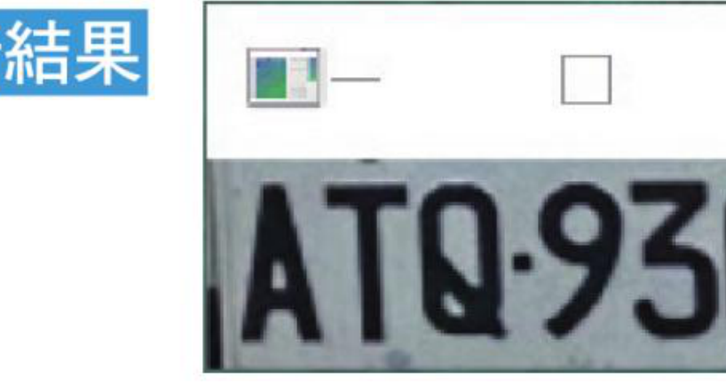

第 31 章
车牌辨识
撷取车牌影像 · 使用 Tesseract OCR 执行车牌辨识 · 形态学开运算处理车牌 · 车牌辨识心得
本章延续前一章所建立的哈尔辨识分类器，示范如何从汽车影像中撷取车牌，再使用 Tesseract OCR 判读车牌号码。
31-1
撷取所读取的车牌影像
前一章内容我们学会了辨识车牌，其实就可以将所辨识的车牌影像撷取与储存。
程式实例 ch31_1.py：在 ch31\testCar 资料夹有 cartest1.jpg，我们先使用哈尔特征分类器找出车牌，然后将车牌影像撷取，以 atq9305.jpg 影像储存，同时显示此车牌。
# ch31_1.py
import cv2
pictPath = "haar_carplate.xml" # 哈尔特征档路径
img = cv2.imread("testCar/cartest1.jpg") # 读辨识的影像
car_cascade = cv2.CascadeClassifier(pictPath) # 读哈尔特征档
# 执行辨识
plates = car_cascade.detectMultiScale(img, scaleFactor=1.05, minNeighbors=3,
minSize=(20,20),maxSize=(155,50))
if len(plates) > 0 : # 有侦测到车牌
for (x, y, w, h) in plates: # 标记车牌
carplate = img[y:y+h, x:x+w] # 车牌影像
else:
print("侦测车牌失败")
cv2.imshow('Car', carplate) # 显示所读取的车辆
cv2.imwrite("atq9305.jpg", carplate)
cv2.waitKey(0)
cv2.destroyAllWindows()

撷取出的车牌影像，并以 atq9305.jpg 储存。
31-2
使用 Tesseract OCR 执行车牌辨识
有关安装 Tesseract OCR 的相关知识请读者参考笔者所著的 Python 王者归来，这是文字辨识软体，我们可以将所储存的影像使用 Tesseract OCR 判读车牌。
程式实例 ch31_2.py：读取 ch31_1.py 所建立的 atq9305.jpg，然后列出此影像的车牌号码。
# ch31_2.py
from PIL import Image
import pytesseract
config = '--tessdata-dir "C:\\Program Files (x86)\\Tesseract-OCR\\tessdata"'
text = pytesseract.image_to_string(Image.open('atq9305.jpg'),
config=config)
print(f"车号是：{text}")
==================== RESTART: D:\OpenCV_Python\ch31\ch31_2.py ====================
车号是： ATQ9305
31-3
侦测车牌与辨识车牌
我们可以整合 31-1 与 31-2 节，读取汽车影像后，同时列出车牌。
程式实例 ch31_3.py：读取汽车影像，然后输出此汽车的车牌。
# ch31_3.py
import cv2
import pytesseract
config = '--tessdata-dir "C:\\Program Files (x86)\\Tesseract-OCR\\tessdata"'
pictPath = "haar_carplate.xml" # 哈尔特征档路径
img = cv2.imread("testCar/cartest1.jpg") # 读辨识的影像
car_cascade = cv2.CascadeClassifier(pictPath) # 读哈尔特征档
# 执行辨识
plates = car_cascade.detectMultiScale(img, scaleFactor=1.05,
minNeighbors=3, minSize=(20,20), maxSize=(155,50))
if len(plates) > 0 : # 有侦测到车牌
for (x, y, w, h) in plates: # 标记车牌
carplate = img[y:y+h, x:x+w] # 车牌影像
else:
print("侦测车牌失败")
cv2.imshow('Car', carplate) # 显示所读取的车辆
text = pytesseract.image_to_string(carplate,config=config) # OCR辨识
print(f"车号是：{text}")
cv2.waitKey(0)
cv2.destroyAllWindows()
==================== RESTART: D:\OpenCV_Python\ch31\ch31_3.py ====================
车号是： ATQ9305
上述我们获得不错的结果，但是 OCR 辨识也会失误，可以参考下列实例。
程式实例 ch31_4.py：使用 testCar/cartest3.jpg 影像辨识，这个程式只是修改所读取的汽车影像档案。
# ch31_4.py
import cv2
import pytesseract
config = '--tessdata-dir "C:\\Program Files (x86)\\Tesseract-OCR\\tessdata"'
pictPath = "haar_carplate.xml" # 哈尔特征档路径
img = cv2.imread("testCar/cartest3.jpg") # 读辨识的影像
car_cascade = cv2.CascadeClassifier(pictPath) # 读哈尔特征档
plates = car_cascade.detectMultiScale(img, scaleFactor=1.05,
minNeighbors=3, minSize=(20,20), maxSize=(155,50))
if len(plates) > 0 :
for (x, y, w, h) in plates:
carplate = img[y:y+h, x:x+w]
else:
print("侦测车牌失败")
cv2.imshow('Car', carplate)
text = pytesseract.image_to_string(carplate,config=config)
print(f"车号是：{text}")
cv2.waitKey(0)
cv2.destroyAllWindows()
上述缺点有两项，分别是 A 左边出现底线符号（_），5 辨识为 S。
注
上述车牌号码最右数字是 2，笔者用模糊化处理。
31-4
二值化处理车牌
这一节尝试改良上一节的缺点。
程式实例 ch31_5.py：使用二值化处理车牌，同时将车牌存入 car_plate.jpg。
# ch31_5.py
import cv2
import pytesseract
carFile = "car_plate.jpg"
config = '--tessdata-dir "C:\\Program Files (x86)\\Tesseract-OCR\\tessdata"'
pictPath = "haar_carplate.xml" # 哈尔特征档路径
img = cv2.imread("testCar/cartest3.jpg") # 读辨识的影像
car_cascade = cv2.CascadeClassifier(pictPath) # 读哈尔特征档
# 执行辨识
plates = car_cascade.detectMultiScale(img, scaleFactor=1.05, minNeighbors=3,
minSize=(20,20),maxSize=(155,50))
if len(plates) > 0 : # 有侦测到车牌
for (x, y, w, h) in plates: # 标记车牌
carplate = img[y:y+h, x:x+w] # 车牌影像
else:
print("侦测车牌失败")
cv2.imshow('Car', carplate) # 显示所读取的车辆
ret, dst = cv2.threshold(carplate,100,255,cv2.THRESH_BINARY) # 二值化
cv2.imshow('Car binary', dst) # 显示二值化车牌
text = pytesseract.image_to_string(carplate,config=config) # OCR辨识
print(f"车号是：{text}")
cv2.waitKey(0)
cv2.destroyAllWindows()
==================== RESTART: D:/OpenCV_Python/ch31/ch31_5.py ====================
车号是： ATFS5312
上述得到 ATFS5312，字母 S 是多余的，其实这个辨识是不稳定的，因为有时候得到的结果是 ATF5312，5 被辨识为 S。或是，有时辨识结果仍是 _ATES312。这表示影像仍有杂质，干扰辨识，下一节继续解说。
31-5
形态学的开运算处理车牌
使用形态学的开运算可以删除噪音。
程式实例 ch31_6.py：形态学的开运算处理车牌。
# ch31_6.py
import cv2
import numpy as np
import pytesseract
carFile = "car_plate.jpg"
config = '--tessdata-dir "C:\\Program Files (x86)\\Tesseract-OCR\\tessdata"'
pictPath = "haar_carplate.xml" # 哈尔特征档路径
img = cv2.imread("testCar/cartest3.jpg") # 读辨识的影像
car_cascade = cv2.CascadeClassifier(pictPath) # 读哈尔特征档
# 执行辨识
plates = car_cascade.detectMultiScale(img, scaleFactor=1.05, minNeighbors=3,
minSize=(20,20),maxSize=(155,50))
if len(plates) > 0 : # 有侦测到车牌
for (x, y, w, h) in plates: # 标记车牌
carplate = img[y:y+h, x:x+w] # 车牌影像
else:
print("侦测车牌失败")
cv2.imshow('Car', carplate) # 显示所读取的车辆
ret, dst = cv2.threshold(carplate,100,255,cv2.THRESH_BINARY) # 二值化
cv2.imshow('Car binary', dst) # 显示二值化车牌
kernel = np.ones((3,3), np.uint8)
dst1 = cv2.morphologyEx(dst, cv2.MORPH_OPEN, kernel) # 执行开运算
text = pytesseract.image_to_string(dst1,config=config) # 执行辨识
print(f"车号是：{text}")
cv2.imwrite(carFile, dst) # 写入储存
cv2.waitKey(0)
cv2.destroyAllWindows()
==================== RESTART: D:/OpenCV_Python/ch31/ch31_6.py ====================
车号是： ATF5312
31-6
车牌辨识心得
坦白说车牌要辨识成功，第 30 章建立好的哈尔辨识分类器仍是关键，前一节笔者使用二值化处理车牌影像，然后再去除车牌噪音，对整个辨识是有加分效果。
实务上当下停车场，缴费机在要求输入车牌号码后，会要求点选车牌影像其实就是担心辨识错误，最终是靠所点选的车牌影像为缴费的依据。
这一章笔者使用 Tesseract-OCR 辨识系统，辨识车牌字母与阿拉伯数字，如果读者要更进一步很精确也可以将车牌字母与阿拉伯数字拆开，相当于将字母与数字拆成 7 个影像，然后再单独辨识字母与影像。
1：读取 cartest2.jpg，如下所示：
请辨识车牌，最右侧号码是 7，笔者用模糊化处理。
==================== RESTART: D:/OpenCV_Python/ex/ex31_1.py ====================
车号是： AKY6217